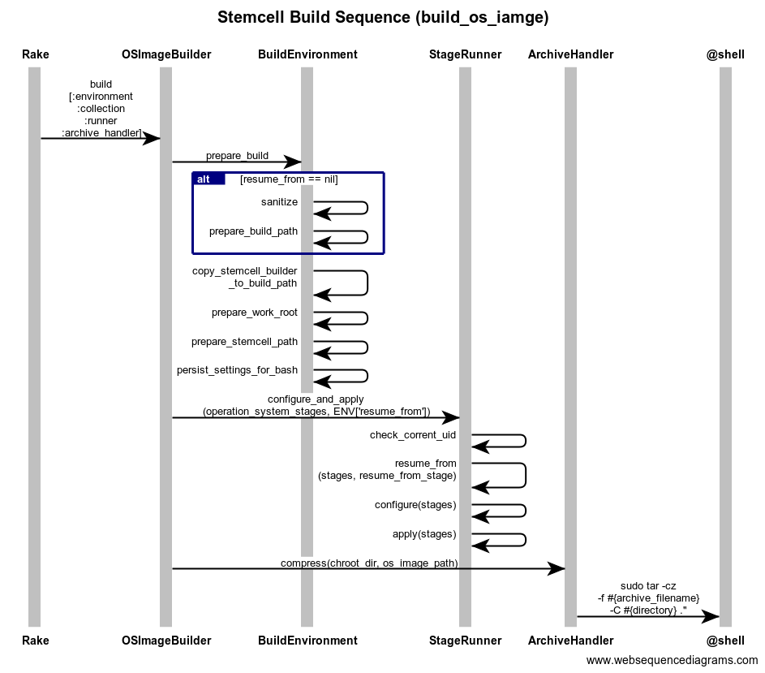

BOSH linux stemcell builder¶
Repository: https://github.com/cloudfoundry/bosh-linux-stemcell-builder
기본적으로 프로젝트에 Vagrantfile 이 포함되어 있기 때문에 build 에 필요한 환경을 만들기 위해서는 VirtualBox 와 Vagrant 가 깔려 있으면 된다. 하지만 이를 자동화된 방식으로 반복하기 위해서는 CI 를 활용하는게 나은 방법일 것이고 다음은 Cuncourse CI 를 통한 Build 절차이다.
Concourse workflow¶
To create a stemcell on concourse instead of locally on virtualbox, you can execute the build-stemcell task.
mkdir /tmp/version
cat <<EOF >/tmp/version/number
0.0
EOF
cd /tmp/version
git init
pushd ~/workspace/bosh-linux-stemcell-builder
fly -t production login
IAAS=vsphere HYPERVISOR=esxi OS_NAME=ubuntu OS_VERSION=trusty time fly -t production execute -p -x -i version=/tmp/version -i bosh-linux-stemcell-builder=. -c ./ci/tasks/build.yml -o stemcell=/tmp/vsphere/dev/
popd
Q: 내 local /tmp/version 에 version 정보가 관리되어야 하는가? 지워지면 어떻하지? 버전번호 업데이트는 알아서 해주나?
Periodic bump¶
OS images are stored in S3 bucket bosh-os-images.
stemcell 에 사용되는 OS Image 는 항상 중요 보안 문제와 심각한 버그들로 부터 안전하게 시스템이 지켜지도록 자동화된 방식으로 지속 업데이트 된다. 특별한 수정사항이 발생한 업데이트의 경우 패치 내용이 기술되지만 정기적인 자동 업데이트의 경우는 Periodic bump 로 기술된다.
Rakefile¶
참조: https://github.com/cloudfoundry/bosh-linux-stemcell-builder
프로젝트 최상단에 위치한 Rakefile 은 Stemcell Build Process 의 전체 구조를 살펴보는데 도움이 될 것이다. Rakefile 에 의하면 총 4 단계를 거쳐 stemcell 이 제작되는 것을 알 수 있다. 만약 S3 와 같은 원격 저장소를 활용하지 않는다면 이를 2 단계로 간소화 할 수 있다.
Rakefile 에 기술된 stemcell build process
- build_os_image
- upload_os_image (optional)
- download_os_image (optional)
- build(_with_local_os_image)
S3 를 사용하지 않을때의 stemcell build process
- build_os_image
- build_woth_local_os_image
build_os_image¶
stemcell 의 모체가 되는 OS Image 를 생성한다. 옵션에 따라 Ubuntu / CentOS / ReadHat 등을 선택할 수 있으며 Public 으로 배포되는 ISO Image 에 약간의 hardning 작업을 가해 보안성을 강화하고 bosh 와 관련된 모듈들을 추가 설치한 Image File 이 생성된다

title Stemcell Build Sequence (build_os_iamge)
Rake->OSImageBuilder:build\n[:environment\n:collection\n:runner\n:archive_handler]
OSImageBuilder->BuildEnvironment:prepare_build
alt resume_from == nil
BuildEnvironment->BuildEnvironment:sanitize
BuildEnvironment->BuildEnvironment:prepare_build_path
end
BuildEnvironment->BuildEnvironment:copy_stemcell_builder\n_to_build_path
BuildEnvironment->BuildEnvironment:prepare_work_root
BuildEnvironment->BuildEnvironment:prepare_stemcell_path
BuildEnvironment->BuildEnvironment:persist_settings_for_bash
OSImageBuilder->StageRunner:configure_and_apply\n(operation_system_stages, ENV['resume_from'])
StageRunner->StageRunner:check_corrent_uid
StageRunner->StageRunner:resume_from\n(stages, resume_from_stage)
StageRunner->StageRunner:configure(stages)
StageRunner->StageRunner:apply(stages)
OSImageBuilder->ArchiveHandler:compress(chroot_dir, os_image_path)
ArchiveHandler->@shell:sudo tar -cz \n-f #{archive_filename} \n-C #{directory} ."
stemcell 은 StageCollection class 에 정의된 stages 라고 불리우는 묶음을 StateRunner class 를 통해 순차적으로 수행함으로써 OS 이미지를 생성한다. OSImageBuilder 가 StageRunner 를 초기화 할때 StageCollection.operation_system_stages 를 전달하므로 이 states 를 순차적으로 수행할 것이다. IaaS/OS 별로 서로 다른 stages 가 정의되어 있으며 상황에 맞는 state 묶음인 stages 를 정의해 둔 소스가 다음 위치에 있다.
bosh_stemcell/lib/bosh/stemcell/state_collection.rb
Stage 는 ‘apply.sh’ 에 의해 실행되며 100% 독립적으로 실행될 수 있도록 Stage 간에 의존성이 있으면 안된다. states/ 디렉터리의 하부는 다음과 같이 이루어져 있다.
- apply.sh state 실행 스크립트
- assets/* 각 asset 은 stage 를 수행하기 위해 필요한 모든 resource 들이 보괸되는 장소이다.
- config.sh stage 내에서 필요한 local configuration 저장소.
StageCollection.operation_system_stages 를 분석하여 Ubuntu OS Image 를 위한 stages 는 다음과 같이 구성되어 있음을 알게 되었다.
- base_debootstrap,
- base_ubuntu_firstboot,
- base_apt,
- base_ubuntu_build_essential,
- base_ubuntu_packages,
- base_file_permission,
- base_ssh,
- bosh_sysstat,
- system_kernel,
- system_kernel_modules,
- system_ixgbevf (Arch.ppc64le 인 경우 생략)
- bosh_steps
- bosh_sysctl,
- bosh_limits,
- bosh_users,
- bosh_monit,
- bosh_ntpdate,
- bosh_sudoers,
- password_policies,
- restrict_su_command,
- tty_config,
- rsyslog_config,
- delay_monit_start,
- system_grub,
- vim_tiny,
- cron_config,
- escape_ctrl_alt_del,
- system_users,
- bosh_audit_ubuntu,
- bosh_log_audit_start,
upload_os_image / download_os_image¶
build_os_image 에 의해 생성된 image 를 upload/download 한다. 한번 만들어 둔 것을 upload 해 두면 stemcell 제작시 재활용 할 수 있게 된다. local_os_image 를 사용한다면 필요하지 않다.
build(_with_local_os_image)¶
upload_os_image 에 의해 저장된 원격 저장소를 이용하지 않는다면 build_with_local_os_image 를 사용하면 된다. 만들어진 OS Image 를 Bosh 가 인식할 수 있는 stemcell 이라는 형태로 한번 더 감싸는 작업을 하게 된다.
우선, stages 는 몇개의 큰 카테고리로 분류된다.
- initialize
- operating_system_stages
- extract_operating_system_stages
- agent_stages
- build_stemcell_image_stages
- package_stemcell_stages
또한 StageCollection class 는 Forwardable 이어서 다음 class 들로 적절한 위임이 일어난다.
- definition
- infrastructure
- operating_system
- agent
이제 이렇게 분류해 놓은 stages 는 StemcellBuilder 와 StemcellPackager 에 의해 build 되는데 build 순서는 다음과 같다.
- StemcellBuilder
- extract_operating_system_stages
- untar_base_os_image
- agent_stages
- bosh_libyaml
- bosh_go_agent
- aws_cli
- logrotate_config
- dev_tools_config
- static_libraries_config
- build_stemcell_image_stages
- system_network
- system_openstack_clock
- system_openstack_modules
- system_parameters
- bosh_clean
- bosh_harden
- bosh_openstack_agent_settings
- bosh_clean_ssh
- image_create
- image_install_grub
- finish_stemcell_stages
- bosh_package_list
- extract_operating_system_stages
- StemcellPackager
- package_stemcell_stages
- raw_package_stages
- prepare_raw_image_stemcell
- raw_package_stages
- write_manifest
- create_tarball
- package_stemcell_stages